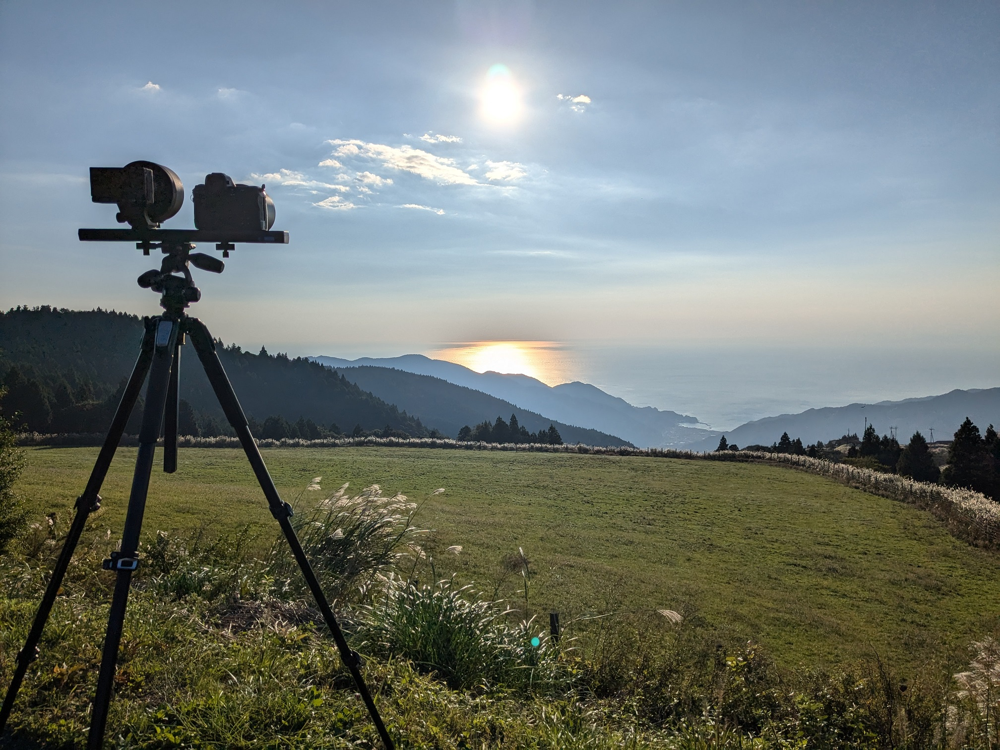
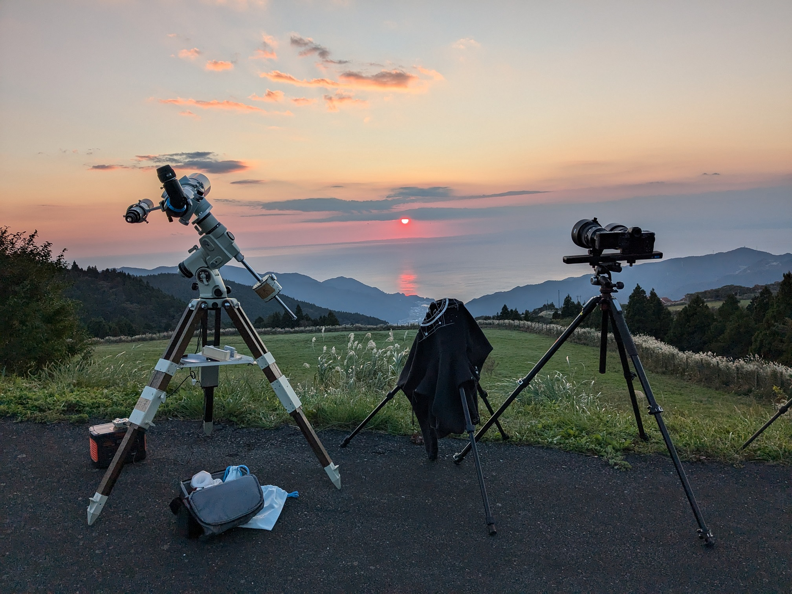
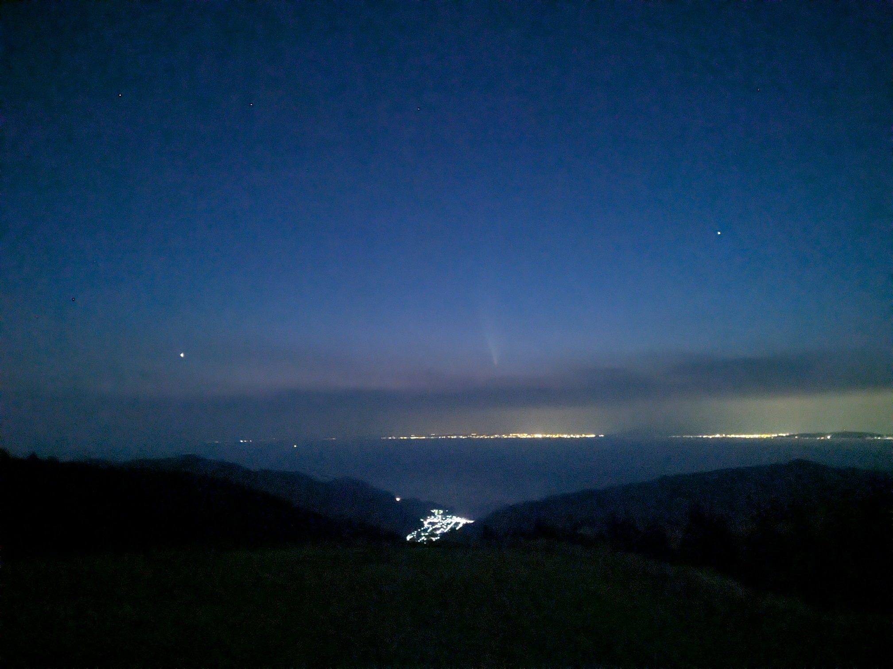
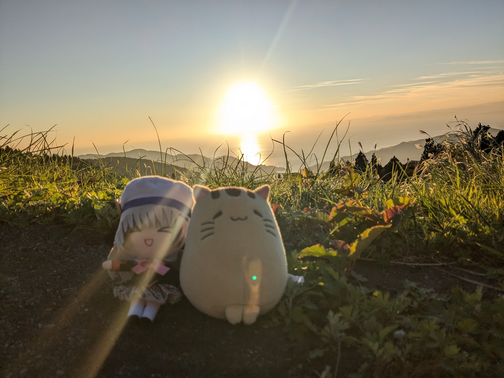
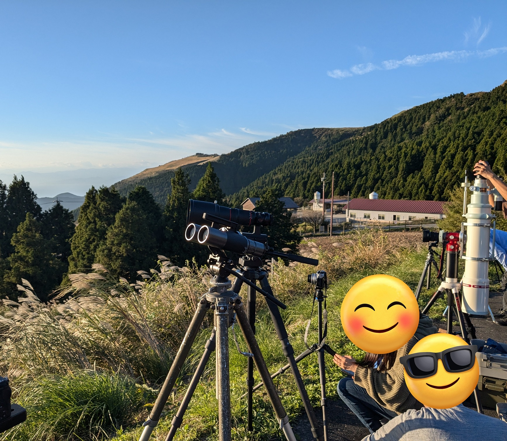
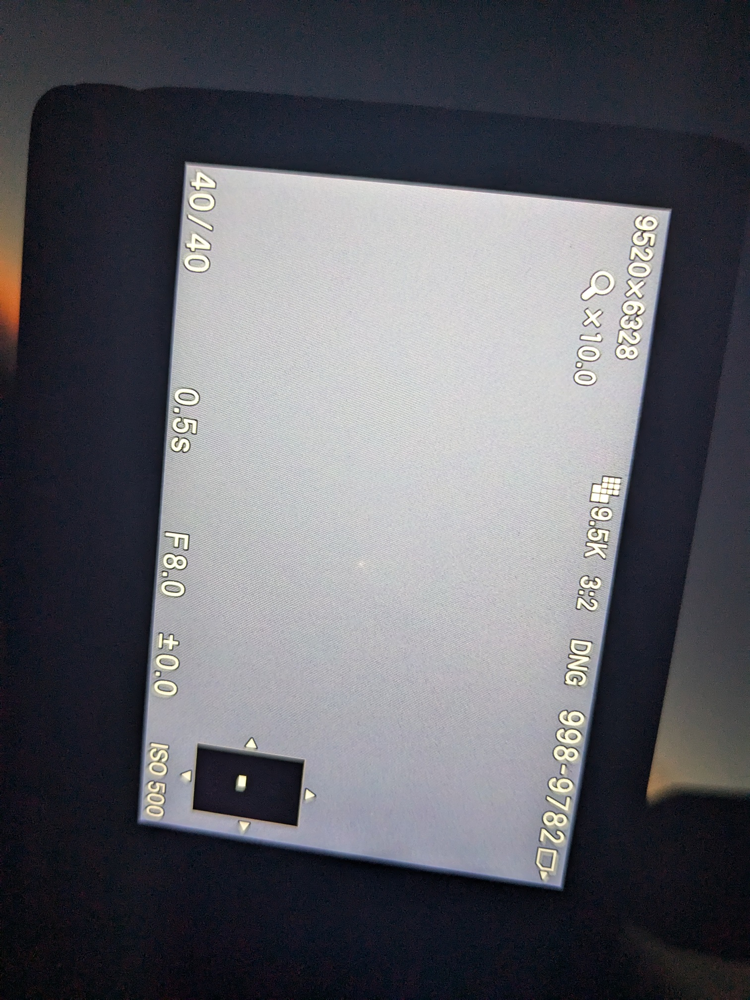
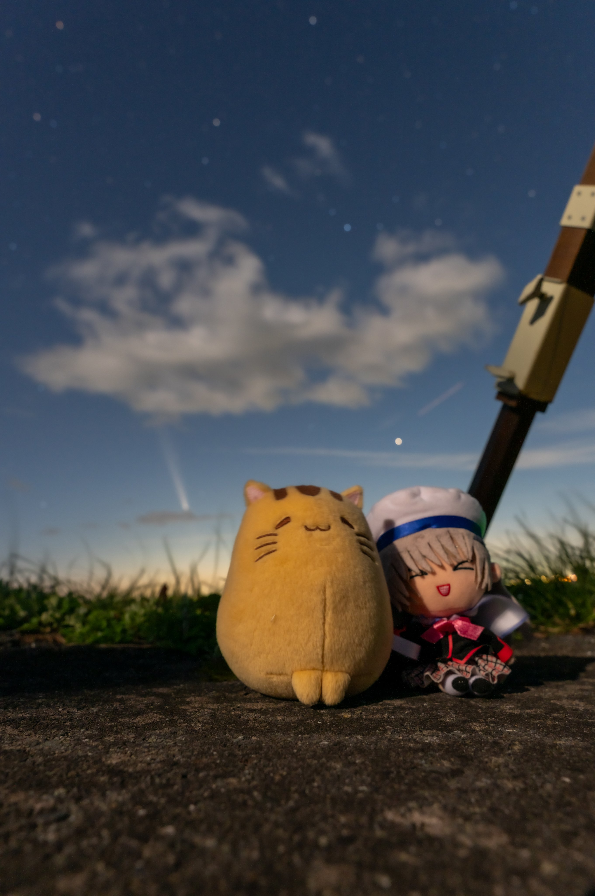
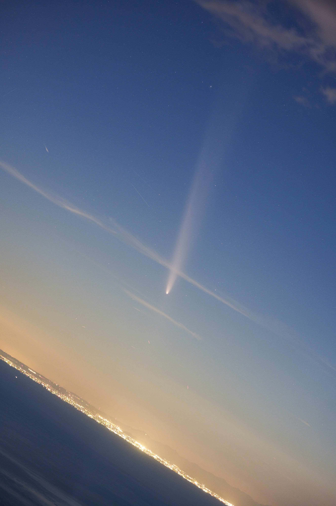

<!DOCTYPE html>
<html>

<head><meta name="generator" content="Hexo 3.8.0">
  <meta charset="utf-8">
  
    <title>
      
        見えたぜ紫金山・アトラス | 
            ほしよみ社会塵のブログ
    </title>
    <meta name="viewport" content="width=device-width">
    <meta name="description" content="前置き生きていると，「これは人生最高の◯◯だ！」と思う瞬間が極稀に訪れます．そしてさらに，ごく短期間のうちにそれを2回以上更新してしまうことがあります．星に関して言えば，自分の場合，大学一年目で白布峠で人生で初めて暗く標高の高い場所で星を見て，「これは人生最高の星空だ！」と感動した記憶が強く残っています．それから数週間後，乗鞍岳でさらにすごい星空を見て人生最高の星空を2回も更新してしまうという貴重">
<meta name="keywords" content="写真,天体写真,機材,カメラ,レンズ,赤道儀,遠征記">
<meta property="og:type" content="article">
<meta property="og:title" content="見えたぜ紫金山・アトラス">
<meta property="og:url" content="http://dabokun.github.io/2024/10/16/00000075-c2023a3/index.html">
<meta property="og:site_name" content="ほしよみ社会塵のブログ">
<meta property="og:description" content="前置き生きていると，「これは人生最高の◯◯だ！」と思う瞬間が極稀に訪れます．そしてさらに，ごく短期間のうちにそれを2回以上更新してしまうことがあります．星に関して言えば，自分の場合，大学一年目で白布峠で人生で初めて暗く標高の高い場所で星を見て，「これは人生最高の星空だ！」と感動した記憶が強く残っています．それから数週間後，乗鞍岳でさらにすごい星空を見て人生最高の星空を2回も更新してしまうという貴重">
<meta property="og:locale" content="ja">
<meta property="og:image" content="http://dabokun.github.io/2024/10/16/00000075-c2023a3/card.jpg">
<meta property="og:updated_time" content="2024-10-17T03:27:09.149Z">
<meta name="twitter:card" content="summary_large_image">
<meta name="twitter:title" content="見えたぜ紫金山・アトラス">
<meta name="twitter:description" content="前置き生きていると，「これは人生最高の◯◯だ！」と思う瞬間が極稀に訪れます．そしてさらに，ごく短期間のうちにそれを2回以上更新してしまうことがあります．星に関して言えば，自分の場合，大学一年目で白布峠で人生で初めて暗く標高の高い場所で星を見て，「これは人生最高の星空だ！」と感動した記憶が強く残っています．それから数週間後，乗鞍岳でさらにすごい星空を見て人生最高の星空を2回も更新してしまうという貴重">
<meta name="twitter:image" content="http://dabokun.github.io/2024/10/16/00000075-c2023a3/card.jpg">
<meta name="twitter:creator" content="@astrodabo">
      
        <link rel="alternative" href="/atom.xml" title="ほしよみ社会塵のブログ" type="application/atom+xml">
        
          
            <link rel="icon" href="/images/favicon.png">
            
              <link rel="stylesheet" href="/css/style.css">
                <!--[if lt IE 9]><script src="//html5shiv.googlecode.com/svn/trunk/html5.js"></script><![endif]-->
                
                  <script data-ad-client="ca-pub-1350688970555904" async src="https://pagead2.googlesyndication.com/pagead/js/adsbygoogle.js"></script>
</head></html>
<body>
  <div id="container">
    <div class="mobile-nav-panel">
	<i class="icon-reorder icon-large"></i>
</div>
<header id="header">
	<h1 class="blog-title">
		<a href="/">
			ほしよみ社会塵のブログ
		</a>
	</h1>
	<nav class="nav">
		<ul>
			
				<li><a href="/">
						Home
					</a></li>
				
				<li><a href="/categories">
						Categories
					</a></li>
				
				<li><a href="/tags">
						Tags
					</a></li>
				
				<li><a href="/archives">
						Archives
					</a></li>
				
				<li><a href="/about">
						About
					</a></li>
				
				<li><a href="/work">
						Work
					</a></li>
				
					<li><a id="nav-search-btn" class="nav-icon" title="Search"></a></li>
					<li><a href="https://github.com/dabokun"></a>
					</li>
					<li><a href="https://twitter.com/astrodabo"></a></li>
					
						<li><a href="/atom.xml" id="nav-rss-link" class="nav-icon" title="RSS Feed"></a>
						</li>
						
		</ul>
	</nav>
	<div id="search-form-wrap">
		<form action="//google.com/search" method="get" accept-charset="UTF-8" class="search-form"><input type="search" name="q" class="search-form-input" placeholder="Search"><button type="submit" class="search-form-submit">&#xF002;</button><input type="hidden" name="sitesearch" value="http://dabokun.github.io"></form>
	</div>
</header>

    <div id="main">
      <article id="post-00000075-c2023a3" class="post">
	<footer class="entry-meta-header">
		<span class="meta-elements date">
			<a href="/2024/10/16/00000075-c2023a3/" class="article-date">
  <time datetime="2024-10-16T11:48:18.000Z" itemprop="datePublished">2024-10-16</time>
</a>
		</span>
		<span class="meta-elements author">astr0dab0</span>
		<div class="commentscount">
			
			<a href="http://dabokun.github.io/2024/10/16/00000075-c2023a3/#disqus_thread" class="article-comment-link">Comments</a>
			
		</div>
	</footer>
	
	<header class="entry-header">
		
  
    <h1 class="article-title entry-title" itemprop="name">
      見えたぜ紫金山・アトラス
    </h1>
  

	</header>
	<div class="entry-content">
		
		
		<div id="toc" class="toc-article">
			<p class="toc-title">目次</p>
			<ol class="toc"><li class="toc-item toc-level-4"><a class="toc-link" href="#前置き"><span class="toc-number">1.</span> <span class="toc-text">前置き</span></a></li><li class="toc-item toc-level-4"><a class="toc-link" href="#2024-10-13"><span class="toc-number">2.</span> <span class="toc-text">2024/10/13</span></a></li><li class="toc-item toc-level-4"><a class="toc-link" href="#2024-10-14"><span class="toc-number">3.</span> <span class="toc-text">2024/10/14</span></a></li><li class="toc-item toc-level-4"><a class="toc-link" href="#まとめ"><span class="toc-number">4.</span> <span class="toc-text">まとめ</span></a></li></ol>
		</div>
		
		<h4 id="前置き"><a href="#前置き" class="headerlink" title="前置き"></a>前置き</h4><p>生きていると，「これは人生最高の◯◯だ！」と思う瞬間が極稀に訪れます．そしてさらに，ごく短期間のうちにそれを2回以上更新してしまうことがあります．<br>星に関して言えば，自分の場合，大学一年目で白布峠で人生で初めて暗く標高の高い場所で星を見て，「これは人生最高の星空だ！」と感動した記憶が強く残っています．それから数週間後，乗鞍岳でさらにすごい星空を見て人生最高の星空を2回も更新してしまうという貴重な経験をしました．<br>さて，前々から話題になっていた C2023/A3 紫金山・アトラス彗星ですが，車が壊れたり9月末にコロナになってしまったりとトラブルが重なったせいで（天気が悪かったというのもありますが），近日点に近づく前半は一度も見られずモヤモヤする日々を過ごしていました．そして先日，無事崩壊することなく近日点を通過し明るさも上々となってようやく巡ってきた天気も良さそうな三連休．このチャンスは逃すわけにもいかず，2024年10月13日と14日の二晩，彗星を見に出かけたわけです．</p>
<a id="more"></a>
<h4 id="2024-10-13"><a href="#2024-10-13" class="headerlink" title="2024/10/13"></a>2024/10/13</h4><p>車がないので，とりあえず金曜のうちに実家に戻ります．翌日土曜は実家近くで歯列矯正治療の予定が入っていたので，車を借りて現在一人暮らししている新居からの機材回収のみにとどめました．<br>近くのスーパーで買い物ついでに西の空を眺めてみましたが低空には雲がかかっていたので今日は怪しいだろうと思い込んで実家に帰宅．</p>
<p>日曜は少し遅めに起き，機材をチェックして静岡県の仁科峠に向けて出発．本当は帰らず月曜日も出るつもりでしたが，このときカメラのバッテリーを一個実家のコンセントにさしっぱなしにしていたので結局帰る羽目になりました．<br>前回彗星を見に行ったのはネオワイズ彗星のときで，雲に阻まれたものの写真になんとか写すことができたといった感じでした．今回はどうだろう．</p>
<a href="https://dabokun.github.io/2020/07/20/00000035-2020-07-neowise/" class="link-preview" target="target:_blank" rel="rel:nofollow"><div class="link-area"><div class="og-image"></div><div class="descriptions"><div class="og-title">2020年7月 撮ったぜネオワイズ</div><div class="og-description">撮ったぜネオワイズこんにちは．今話題のネオワイズ彗星を撮影してきました．</div></div></div></a>
<p></p>
<p>箱根を越えて15時半頃に現地に着いてみると，天気はかなりいい感じ．土曜には城ヶ島で見えていたという報告も見ましたので，「標高もあるここで見えないわけがない！」と思う反面，「あまり大した事なかった」みたいな報告もあったので「写真で写せればいいかな」程度に考えていました．16時を過ぎると同業者が続々と集まりはじめ，仁科峠のそこそこ広い駐車場いっぱいに三脚が並んでいました．</p>
<p></p>
<p>日も暮れてきて，少し雲も出てきました．この日はカメラ2台で撮影，望遠鏡1台で眼視です．<br>その後夕暮れの空を眺めつつ隣にカメラを出していた人と談笑しつつ，しばらく望遠鏡やファインダーで探したものの彗星は見つからず．金星はよくわかりますが…．<br>18時前ごろでしょうか．ファインダーで見え始めます．一度見えるとカメラのライブビューでも写りはじめ，空が暗くなるとともにあれよあれよと核の輝きが肉眼でも見え始めます．<br>なんか尾も余裕で見えてきました．俺はまだ人生で一度も肉眼で彗星の尾を見たことがないんだ．ちょっと待ってくれよ．</p>
<p></p>
<p>などと思いつつ彗星は待ってくれません．結局，肉眼で4～5°程度の尾を見せながら西の空に沈んでいきます．スマホでも全然写ります．すごいすごい，もう大興奮です．<br>望遠鏡で見ても，広めのアイピースでも収まりきらないような尾を見せています．こんなのは今まで見たことがありません．<br>この日は Nikon Z8 でタイムラプスを撮影していましたが ISO の自動制御が走っておらず普通に失敗しておりました（もう一台のカメラバッテリーは前述の通りです）．</p>
<div class="video-container"><iframe src="//www.youtube.com/embed/As9SUpTJ0yQ" frameborder="0" allowfullscreen></iframe></div>
<p>撮影はミスりましたが，興奮冷めやらぬままそそくさと撤収します．<br>この日は関西からこちらに来て働いている同年代の方も数名いらっしゃり（何名か？は Twitter でフォローしていただいていた），お話したり眼視で DSO を見せていただいたりしました．ありがとうございました．<br>途中で夕飯を食べたりしながら23時過ぎに実家に帰宅．翌日もあるのでそのまま寝ました．</p>
<h4 id="2024-10-14"><a href="#2024-10-14" class="headerlink" title="2024/10/14"></a>2024/10/14</h4><p>翌日の日曜日は，再びの仁科峠に僕だけではなく友人も何名か集まる予定．土曜に忘れたカメラのバッテリーを回収して実家を出て，新居に置きっぱなしにしていたぬい（ぐるみ）とスーパーワイドビノを取りに行くついでに荷物の整理．この時にカメラプレートとカメラを繋ぐカメラネジを壊れた車に放置していたせいで手元にないことに気づきます．これでは赤道儀にカメラを載せられないので，仁科峠に向かう道中のホームセンターで購入．<br>望遠鏡は置いて，アイピースだけ友人に提供できるように持っていきました．</p>
<p></p>
<p>結局土曜日と同じくらいに現地に着いてみると，土曜日よりも彗星目的の人が多く集まっていました．天気も，少なくとも土曜日より雲が少ないように見えます．<br>友人も集まりはじめ，現地はどんどん彗星目的の人で賑わっていきます．土曜日にあれだけ素晴らしい姿を見せていたので，今日も同等かそれ以上のものが見られるに違いないという確信のようなものがありました．</p>
<p></p>
<p>ちぎれ雲のようなものもありますが，17時40分ごろにカメラ撮影で移り始めました．</p>
<p></p>
<p>土曜日と同様，暗くなるにつれてどんどん尾が見えてきます．月明かりや彗星自体の減光のためか土曜日よりもコントラストは低く淡い感じがしますが，尾の長さは土曜日の倍，10°くらい見えます．壮大な眺めです．</p>
<p></p>
<p>この日は fpL と Z8 で撮りまくります．</p>
<div class="video-container"><iframe src="//www.youtube.com/embed/BYUG_USV2e0" frameborder="0" allowfullscreen></iframe></div>
<p>こちらは赤道儀を使用した短めのタイムラプスですが，空が暗くなる短時間のうちに美しく輝きを放つ様子がわかります．淡いですが，ネックライン構造も見て取ることができます．</p>
<div class="video-container"><iframe src="//www.youtube.com/embed/RFaLUcJ47vg" frameborder="0" allowfullscreen></iframe></div>
<p>こちらは静岡市方面に沈んでいく彗星です．カメラ雲台がなかったので地平線は斜めです．</p>
<p></p>
<div style="text-align: center;">
「紫金山・アトラス彗星」<br>
2024年10月14日18時35分 静岡県 仁科峠<br>
SIGMA 105mm F1.4 DG HSM Art<br>
SIGMA fpL<br>
ISO-640/F2.0/8s<br>
タカハシ EM-11 Temma2 Jr.<br>
Adobe Photoshop CC<br><br>
</div>

<p>上のタイムラプスから適当に切り出して編集したもの．105mm では全然収まり切らなさそうな尾の長さ．迫力満点です．</p>
<div class="video-container"><iframe src="//www.youtube.com/embed/9eujeDhjEhA" frameborder="0" allowfullscreen></iframe></div>
<p>こちらは Z8 でのタイムラプスです．空をかけながら街明かりの中に沈んでいきます．素晴らしい．</p>
<h4 id="まとめ"><a href="#まとめ" class="headerlink" title="まとめ"></a>まとめ</h4><p>さて，今回2日連続で彗星を楽しみました．13日と14日で，同じくらいの高度で比較すると↓のような感じになりました．</p>
<p></p>
<p>露出時間が違うので単純比較はできませんが，個人的には14日のほうが尾が長く，より素晴らしく見えていたと思います．</p>
<p>このようにして，「人生最高の彗星」は二晩連続で更新されたのでした．大満足．</p>

		
	</div>
	<footer class="article-footer">
		<a href="https://twitter.com/intent/tweet?text=%E8%A6%8B%E3%81%88%E3%81%9F%E3%81%9C%E7%B4%AB%E9%87%91%E5%B1%B1%E3%83%BB%E3%82%A2%E3%83%88%E3%83%A9%E3%82%B9｜%E3%81%BB%E3%81%97%E3%82%88%E3%81%BF%E7%A4%BE%E4%BC%9A%E5%A1%B5%E3%81%AE%E3%83%96%E3%83%AD%E3%82%B0&url=http://dabokun.github.io/2024/10/16/00000075-c2023a3/" class="twitter-share-button" target="_blank" title="Twitter"></a>
		<script async src="https://platform.twitter.com/widgets.js" charset="utf-8"></script>

		<div id="fb-root"></div>
		<script async defer crossorigin="anonymous" src="https://connect.facebook.net/ja_JP/sdk.js#xfbml=1&version=v4.0"></script>
		<div class="fb-share-button" data-href="http://dabokun.github.io/2024/10/16/00000075-c2023a3/" data-layout="button_count" data-size="small"><a target="_blank" href="https://www.facebook.com/sharer/sharer.php?u=https%3A%2F%2Fdabokun.github.io%2F&amp;src=sdkpreparse" class="fb-xfbml-parse-ignore">シェア</a></div>
	</footer>
	<footer class="entry-footer">
		<div class="entry-meta-footer">
			<span class="category">
				
  <div class="article-category">
    <a class="article-category-link" href="/categories/astrophotography/">天体写真</a>
  </div>

			</span>
			<span class=" tags">
				
  <ul class="article-tag-list"><li class="article-tag-list-item"><a class="article-tag-list-link" href="/tags/camera/">カメラ</a></li><li class="article-tag-list-item"><a class="article-tag-list-link" href="/tags/lens/">レンズ</a></li><li class="article-tag-list-item"><a class="article-tag-list-link" href="/tags/photography/">写真</a></li><li class="article-tag-list-item"><a class="article-tag-list-link" href="/tags/astrophotography/">天体写真</a></li><li class="article-tag-list-item"><a class="article-tag-list-link" href="/tags/equipments/">機材</a></li><li class="article-tag-list-item"><a class="article-tag-list-link" href="/tags/mount/">赤道儀</a></li><li class="article-tag-list-item"><a class="article-tag-list-link" href="/tags/expedition/">遠征記</a></li></ul>

			</span>
		</div>
	</footer>
	
	
<nav id="article-nav">
  
    <a href="/2999/12/31/99999999-notice/" id="article-nav-newer" class="article-nav-link-wrap">
      <strong class="article-nav-caption">Newer</strong>
      <div class="article-nav-title">
        
          お知らせ
        
      </div>
    </a>
  
  
    <a href="/2024/09/11/00000074-2024-res/" id="article-nav-older" class="article-nav-link-wrap">
      <strong class="article-nav-caption">Older</strong>
      <div class="article-nav-title">
        
          ブログ復帰していきます
        
      </div>
    </a>
  
</nav>

	
</article>


<section id="comments">
	<div id="disqus_thread">
		<noscript>Please enable JavaScript to view the <a href="//disqus.com/?ref_noscript">comments powered by
				Disqus.</a></noscript>
	</div>
</section>

    </div>
    <div class="mb-search">
  <form action="//google.com/search" method="get" accept-charset="utf-8">
    <input type="search" name="q" results="0" placeholder="Search">
    <input type="hidden" name="q" value="site:dabokun.github.io">
  </form>
</div>
<footer id="footer">
	<h1 class="footer-blog-title">
		<a href="/">ほしよみ社会塵のブログ</a>
	</h1>
	<span class="copyright">
		&copy; 2024 astr0dab0<br>
		Modify from <a href="http://sanographix.github.io/tumblr/apollo/" target="_blank">Apollo</a> theme, designed by <a href="http://www.sanographix.net/" target="_blank">SANOGRAPHIX.NET</a><br>
		Powered by <a href="http://hexo.io/" target="_blank">Hexo</a>
	</span>
</footer>
    
<script>
  var disqus_shortname = 'astr0dab0';
  
  var disqus_url = 'http://dabokun.github.io/2024/10/16/00000075-c2023a3/';
  
  (function(){
    var dsq = document.createElement('script');
    dsq.type = 'text/javascript';
    dsq.async = true;
    dsq.src = '//go.disqus.com/embed.js';
    (document.getElementsByTagName('head')[0] || document.getElementsByTagName('body')[0]).appendChild(dsq);
  })();
</script>


<script src="//ajax.googleapis.com/ajax/libs/jquery/2.0.3/jquery.min.js"></script>


<link rel="stylesheet" href="/fancybox/jquery.fancybox.css" media="screen" type="text/css">
<script src="/fancybox/jquery.fancybox.pack.js"></script>


<script src="/js/script.js"></script>
  </div>
</body>
</html>